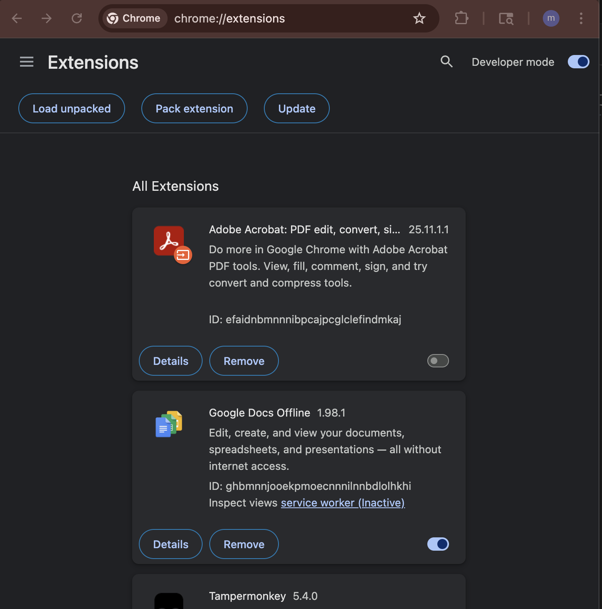
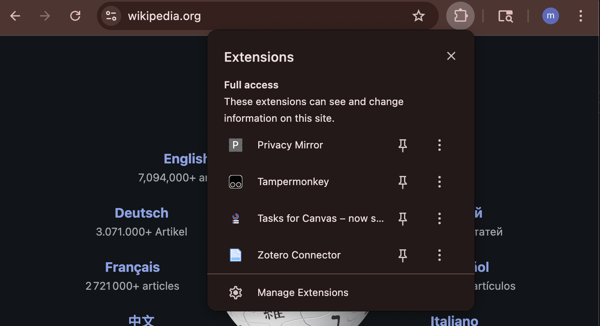

Clone this repository: git@github.com:maxsoljak/Final-project---Web-apps.git
Check where your repository cloned on your machine and then proceed with the instructions
Step 1: Open Chrome Extensions Page
Open Chrome and go to chrome://extensions/. You can copy-paste it into the address bar.
Step 2: Enable Developer Mode
Click the toggle for Developer mode in the top right corner of the page.

Step 3: Click "Load unpacked"
Click the Load unpacked button to open a folder picker.

Step 4: Select Extension Folder
Navigate to the folder where you have the Privacy Mirror extension files (manifest.json, popup.html, popup.js, content_script.js, style.css) and select it.

Step 5: Verify Installation
After loading, the extension should appear in your list with its icon. You can click it to open the popup.
Step 6: Open Privacy Mirror
Click the Privacy Mirror icon in the Chrome toolbar to view your fingerprint info and privacy score. If not succesfull: Reload the page after first click and try again

Step 7: Hooray!
You have successfully installed Privacy Mirror and can now monitor your privacy on websites.